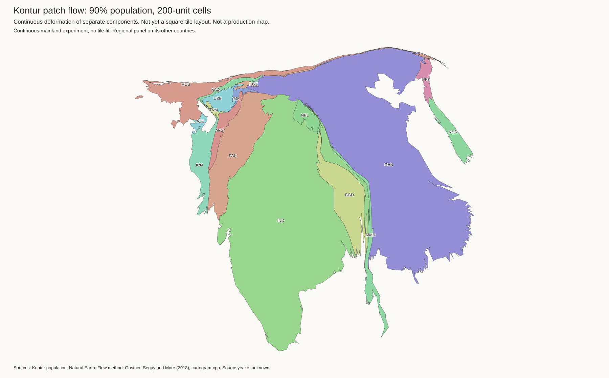
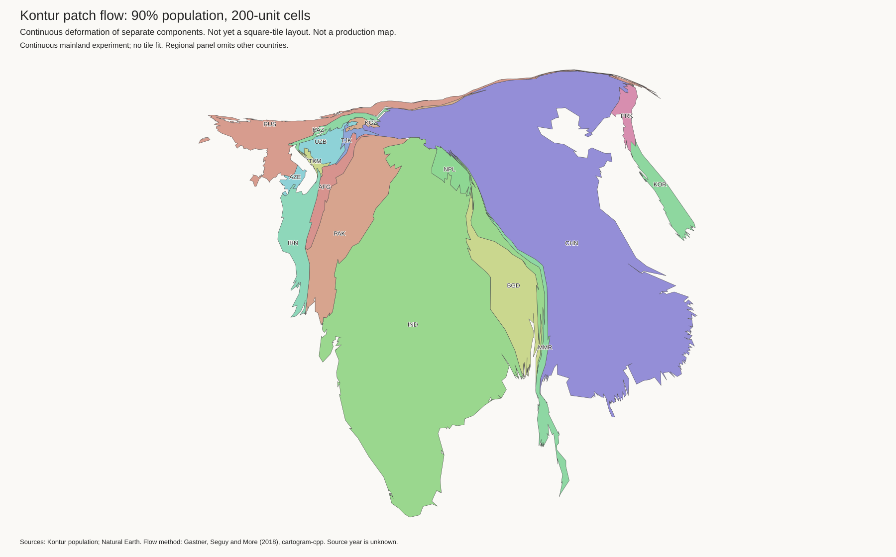
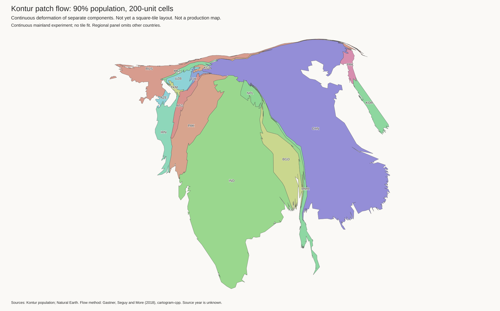

Result: no useful large-scale shape change. These cuts precede patch construction and all fitting. Russia still forms a thin strip above China. Kazakhstan changes slightly. A single continuous flow still moves both sides together. Do not replace the current best with these experiments. No new tile fit or H3-MON export was made.
All panels use the coarse 90% Kontur blend. Each trial also ran 0% and 50% blends with the same patches. All seven trials retain 189 components, 369 patches, and 7,221,236,218 people. Component population and target tile budgets are unchanged. The regional panels omit other countries. Islands and lakes have not been added at this stage.
Two-border trials cut Russia–Kazakhstan and China–Kazakhstan. Four-border trials also cut Russia–China and Russia–Mongolia. Names give nominal source seam width in kilometres, not final gap width. These are artificial gaps, not seas. The 25 km corridor audit permits these borders, but does not prove that every border segment is sparse.
Source cuts retain all unselected contacts. Wider cuts may remove small fragments, with an explicit limit of 0.01% of component source area. All population stays in its original component. The four-border 25 km and 50 km trials were rejected before fitting: they also remove Russia–North Korea. No contact guard was disabled.
Lower is better. The score aligns area and centre, but does not rotate shapes. Compare both fresh controls: repeated solver runs vary. The saved current-best guide is not replaced by either control. Small score changes alone are not evidence of a better layout.
| Trial | Russia | China | India | Kazakhstan |
|---|---|---|---|---|
| control | 0.7319 | 0.6747 | 0.4478 | 0.8039 |
| control-repeat | 0.7281 | 0.6742 | 0.4436 | 0.7965 |
| flow-1 | 0.7308 | 0.6747 | 0.4487 | 0.7817 |
| flow-25 | 0.7292 | 0.6695 | 0.4431 | 0.7615 |
| flow-50 | 0.7287 | 0.6716 | 0.4409 | 0.7429 |
| flow-four-1 | 0.7285 | 0.6714 | 0.4424 | 0.7774 |
| flow-four-5 | 0.7266 | 0.6699 | 0.4443 | 0.7592 |
Measured results include minimum polygon distances in target-tile units. A minimum distance is not an average gap width. Solver area floors still inflate some tiny components; solver success does not mean exact tile budgets. No fit output is approved as a tile guide.
Test a deformation model that permits different movement on each side of selected borders. Keep dense borders constrained. Penalize shape change and excessive separation, rather than merely adding empty strips. Any later tile fit must exclude the selected cuts from its required-contact policy and check whether they return.
World · Settings and checks · Flow geometry
World · Settings and checks · Flow geometry

World · Settings and checks · Flow geometry

World · Settings and checks · Flow geometry
World · Settings and checks · Flow geometry
World · Settings and checks · Flow geometry

World · Settings and checks · Flow geometry